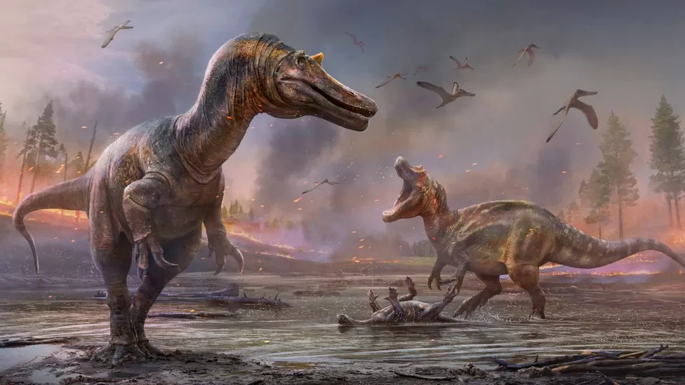
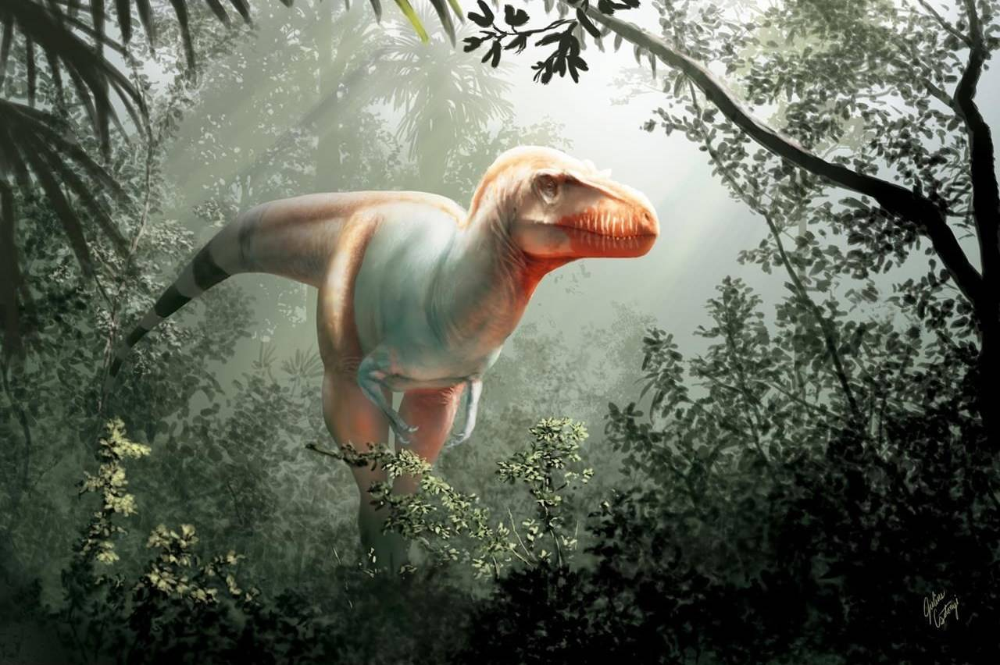

Dinosaur History
The new discoveries have been named Ceratosuchops inferodios (foreground) and Riparvenator milnerae The discovery two new species of dinosaur, which likely roamed the south of England 125 million years ago, has shed new light on the predators. Palaeontologists have described one of the carnivorous reptiles as a "hell heron", comparing its hunting style to a fearsome version of the bird. The remains of the three-toed dinosaurs were found on an Isle of Wight beach. They belonged to the spinosaurid group and are thought to have been 9m (29ft) in length with 1m-long (3ft) skulls. The collection of about 50 bones took several years to unearth.

When someone mentions a dinosaur with a gigantic head and puny little arms, you are obviously going to picture a T. rex in your head. And we don't blame you — thanks to pop culture, the image of the massive tyrannosaurid running about with its tiny hands flailing about with no apparent purpose is permanently lodged in our brains. But word on the street is that the tyrannosaurids weren't the only group endowed with such freakishly small arms! In 2012, the almost-complete skeleton of a new kind of dinosaur was found in the northern Patagonia region of Argentina. And after spending a decade analysing the remains of what was most certainly a fearsome creature, palaeontologists are finally confident that this is a new species. The dinosaur has been christened Meraxes gigas. The generic epithet is an ode to a dragon in the Game of Thrones novel series. And the specific name gigas comes from a Greek word meaning 'giant'. Standing at the height of 11 metres (36 feet) and weighing roughly 4000 kgs, the dinosaur sported several crests, bumps and horns on its skull, which lent it a menacing appearance. But the highlight of the findings is that the dinosaur had teeny-tiny arms, just like the T. rex! The carnivore belongs to the Carcharodontosauridae group of dinosaurs, of which several fossils have been found in the last three decades, but little was known about their skull, forearms or feet. In fact, this was the very reason why this group was initially believed to be a part of the Tyrannosaurid clade. However, this discovery proved that the Meraxes gigas stomped about northern Patagonia in the Late Cretaceous Epoch approximately 95 million years ago — about 20 million years before the T. rex existed. This finding is particularly noteworthy because it shows that the small arms that both the Carcharodontosaurs and Tyrannosaurs possess evolved independently. This also indicates that these tiny arms probably served an important purpose for them to evolve multiple times in dino history. Juan Ignacio Canale, one of the Argentine researchers who found the fossils, said that the Meraxes' arms were very pretty muscular, suggesting they were used often. Canale thinks that the Meraxes might have used their arms to get up after falling down or to hold a partner during mating. Researchers believe that another factor that might have led to the Meraxes developing small arms was its massive head. And the creature likely evolved that way to counterbalance its disproportionately large head. This new discovery gives scientists clues about the evolution and biology of similar massive meat-eating dinosaurs including the Tyrannosaurus rex. The findings of this study are detailed in Current Biology and can be accessed here. ** For weather, science, space, and COVID-19 updates on the go, download The Weather Channel App (on Android and iOS store). It's free! The Weather Company’s primary journalistic mission is to report on breaking weather news, the environment and the importance of science to our lives. This story does not necessarily represent the position of our parent company, IBM.
A fearsome lizard with a name meaning “reaper of death” is the first new tyrannosaur species to be identified in Canada in 50 years, say researchers with the University of Calgary and the Royal Tyrrell Museum. Tyrannosaurs were large meat-eating dinosaurs that walked on two legs and had short arms, two fingers and massive skulls with dagger-like teeth. Tyrannosaurus rex is the most famous in this group. Jared Voris was examining skull fragments stored in a drawer at the Royal Tyrrell Museum in Drumheller, Alta., as part of his masters thesis when he noticed features not seen in other tyrannosaur specimens. The most obvious were prominent vertical ridges along the upper jaw line. “We’d find one feature, and then we’d find another, and then it would just kind of cascade into finally understanding that this was something completely different than what we’d seen before,” said Voris, who is now working on his PhD in paleontology at the University of Calgary. Voris, 25, said “it’s definitely a weird feeling” to make a big discovery so early in his career. He figures the beast could have been about eight metres long with an 80-centimetre skull. “It would have been quite an imposing animal,” he said. ”It definitely would have caused some panic.” READ MORE: B.C. researcher unveils province’s first unique dinosaur discovery The new species is named Thanatotheristes degrootorum, which combines the Greek word for “reaper of death” with the name of a southern Alberta couple, the DeGroots, who happened upon the fossil fragments along the shore of the Bow River west of Medicine Hat, Alta., in 2010. Darla Zelenitsky, who is Voris’s PhD thesis supervisor, said Thanatotheristes predates T. rex by about 12 million years and is the oldest known tyrannosaur discovered in Canada. She said it offers clues about a poorly understood time period.
ntroduction What makes a dinosaur a dinosaur? There are several ways of answering this question, some more accurate (and useful!) than others. A popular but very inaccurate definition calls any big extinct reptile-like animal a dinosaur. This would include everything from the sail-backed mammal cousin Dimetrodon, to marine reptiles, to flying pterosaurs! Sometimes even crocodiles are included. These animals lived in the Age of Dinosaurs, but were not dinosaurs. A more handy general definition would go something like this: Dinosaurs are extinct animals with upright limbs that lived on land during the Mesozoic Era (252 to 66 million years ago). This would basically capture how paleontologists long thought about dinosaurs. With a few exceptions (some pesky early crocodile relatives with upright limbs, for example), it still works if you’re thinking about “classic” dinosaurs: Brontosaurus, Stegosaurus, Triceratops, Tyrannosaurus, etc.